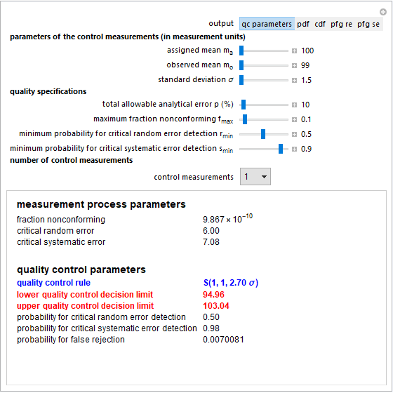

|
| Hellenic Complex Systems Laboratory |
| About |
| An Introduction to the GAs Based QC |
| A Note on the Reliability and Risk Based QC |
| Other Publications |
| CLSI Documents |
HCSL Publications
Statistical Quality Control Design
1. Hatjimihail AT. Tool for Quality Control Design and Evaluation. Wolfram Demonstrations Project, 2010.
Abstract
This Demonstration can be used to estimate various parameters of a measurement process and to design the quality control rule to be applied. You define the parameters of the control measurements that are the assigned mean, the observed mean, and the standard deviation, in arbitrary measurement units. In addition, you define the quality specifications of the measurement process, that is, the total allowable analytical error (as a percentage of the assigned mean), the maximum acceptable fraction of measurements nonconforming to the specifications, and the minimum acceptable probabilities for random and systematic error detection. Finally, you choose the number n of control measurements.
S(1,n,d σ) is a quality control rule that rejects the analytical run if at least one of the n control measurements is less than mo-d σ or greater than mo+d σ, where d is a positive real number and mo and σ are the mean and the standard deviation of the control measurements. The quantities mo-d σ and mo+d σ are the lower and the upper quality control decision limits. Then the fraction nonconforming f, the critical random and systematic errors of the measurement process, as well as the quality control decision limits and the respective probabilities for critical random and systematic error detection and for false rejection are estimated. Finally, by choosing the type of output, you can see the estimated quality control (qc) parameters or plot the probability density function (pdf), the cumulative density function (cdf) of the control measurements, or the power function graphs for the random error (pfg re) and systematic error (pfg se).
The parameters are estimated and the functions are plotted if 10-100<= f <= fmax, where f is the fraction nonconforming and fmax is the maximum acceptable fraction nonconforming.
Snapshot of the Demonstration
Demonstration at the Wolfram Demonstrations Project
2. Hatjimihail AT. Calculation of the confidence bounds for the fraction nonconforming of normal populations of measurements in clinical laboratory medicine [HCSL Technical Report No IV]. Drama: Hellenic Complex Systems Laboratory, 2015.
Abstract
The fraction nonconforming is a key quality measure used in statistical quality control design in clinical laboratory medicine. The confidence bounds of normal populations of measurements for the fraction nonconforming each of the lower and upper quality specification limits when both the random and the systematic error are unknown can be calculated using the noncentral t-distribution, as it is described in detail and illustrated with examples.
Abstract in arXiv.org e-Print archive
Technical Report (Full text, PDF format)
Supporting Information File (MATLAB_Figures.zip)